当天发帖数量：10 条（均为星主 Jason 不跪原创转述） 数据来源：知识星球「南半球聊财经」，星主当日 14:05–15:27 发布
今日要点速览
今天 Jason 的帖子集中在一条主线上：通胀重新抬头，但地缘风险却在缓和。海外侧，欧洲央行罕见地"由降转升"重新加息、美国 PPI（生产者物价）因伊朗战争和 AI 需求冲到 2022 年以来最快涨速，黄金继续被 Tether 等买家吸纳；与此同时，特朗普用"先威胁打击、后宣布握手"的 TACO 套路放出伊朗协议信号，推动美股大涨、油价美元双跌。中国侧则是三组结构性信号：房产税逆势创新高、产业债发行主体盈利"修复但脆弱"、光伏电池深陷产能过剩持续亏损，外加一个新尝试——医疗旅游。最后还埋了一个长尾风险：可能是 1950 年以来最强的"超级厄尔尼诺"。
一句话串起来：资产价格在"通胀回来了"和"战争快结束了"两股力量之间摇摆，而中国经济仍在结构分化中找平衡。
帖 1 · 15:27 · #TAX —— 房产税首次成为地方第一大税种
帖子原文
第一财经：根据财政部数据，2025 年房产税收入为 5212 亿元，收入规模超过契税、土地增值税、城市维护建设税等地方税种，首次居地方税种首位。2026 年前 4 个月数据显示，房产税收入（2185 亿元）依然列地方税种榜首。我国房产存量逐年递增，房源总量稳步扩大，而房屋建造成本、评估价值持续上升，因此房产税税基不断增厚，这就支撑了房产税长期保持增长，基本不受楼市行情影响。房产税保持较快增长的另一个原因，是近些年税务部门强化征管、追缴欠税。

一句话核心：在楼市低迷、卖地和契税收入下滑的背景下，一个"旱涝保收"的存量税种——房产税——悄悄爬到了地方税收的头把交椅。
背景与关键数据
这里要先破一个常见误会：标题里的"房产税"不是大家平时讨论的、针对居民住宅普遍开征的那个"房地产税"（那个目前只在上海、重庆试点）。这里说的房产税是一个早就存在的老税种，主要向经营性房产（企业厂房、写字楼、商铺、出租房屋等）征收，按房产原值或租金收。
- 2025 年这块收入 5212 亿元，2026 年前 4 个月已收 2185 亿元。
- 它超过了契税（买房交易时缴）、土地增值税（卖地/卖楼增值部分缴）、城市维护建设税，第一次成为地方第一大税种。
为什么"第一"含金量高？因为它超过的那几个税，都和交易挂钩——楼市冷、成交少，这些税就跟着掉。而房产税挂钩的是存量（房子在那儿就要交），所以基本不看楼市脸色。
图片解读
这张图有上下两幅：
- 图 1（房产税收入保持较快增长）：灰色柱子是房产税收入（亿元），从 2016 年的 2221 一路升到 2024 年 4705、2025 年 5212，几乎逐年长；最右一根 2185 是 2026 年前 4 个月。两条折线是增速——黑线（房产税增速）大部分时间高于灰线（全国税收总增速），说明它跑赢大盘。注意 2020 年（疫情）房产税增速一度 -4.9%，但很快反弹，韧性强。
- 图 2（房产税成为地方税第一大税种）：把契税（空心柱）、土地增值税（浅灰）、城市维护建设税（深灰）、房产税（黑色）放在一起对比 2020–2025。可以清楚看到黑色柱子（房产税）一路追上，到 2025 年的 5212 终于"反超"了原来更大的契税（4440）和土地增值税（4102）。
为什么重要 / 对市场和经济的含义
这条数据背后是地方财政的收入结构转型。过去十几年地方政府严重依赖"卖地 + 交易税"（土地财政），但 2021 年后楼市下行，卖地收入和交易类税收双双下滑。房产税这种"存量税"的相对地位上升，其实是地方财政在被动地"去土地财政化"。Jason 转这条，潜台词可能是：别只盯着楼市成交，财政正在找新的、更稳定的支柱税源——这也为未来居民住宅房地产税的逐步推进埋下伏笔。
延伸知识：什么是"税基"与"顺周期/逆周期税种"
"税基"就是计税的那个底数（比如房子评估值）。税基越厚、越稳，税收越抗周期。交易类税（契税、土增税）是典型顺周期税种——经济/楼市好就多收、差就少收，会放大财政波动。而存量类税（房产税、未来的房地产税）是逆周期/稳定器，无论行情都稳定进账。一个成熟经济体往往希望财政更多靠后者，这样政府收入不至于跟着资产泡沫大起大落。美国地方政府就高度依赖房产税（property tax），这也是它们财政相对稳定的原因之一。
帖 2 · 15:05 · #金融 —— Tether 仍在买金，跻身全球第五大黄金买家
帖子原文
Jefferies：黄金从 1 月高点已下跌超过 1000 美元/盎司，Tether 买金速度也明显放慢；但 Tether 仍在增加黄金储备。到 2026 年一季度末，Tether 为 USDT 和 XAU₮ 支持的黄金储备约 148 吨，价值 222 亿美元。一季度 Tether 新增买金约 7 吨，虽然远低于此前几个季度，但仍是全球第五大黄金买家之一。多家媒体报道称，Tether 此前从汇丰挖来的两名高级交易员已经离职。这些交易员原本负责搭建 Tether 的黄金交易业务。Tether 买黄金，意味着黄金不再只是传统避险资产，也正在变成链上金融体系的一部分储备资产。
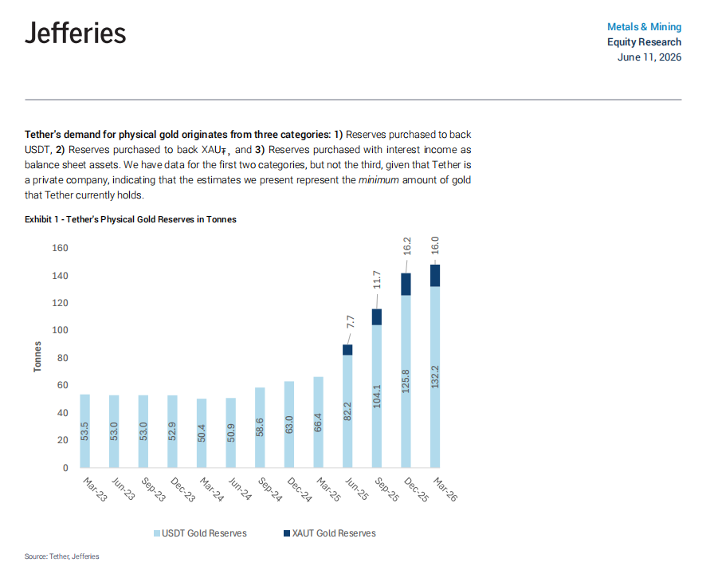
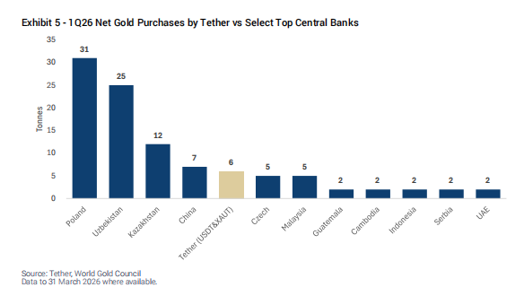
一句话核心：发行全球最大稳定币 USDT 的 Tether，正把黄金堆成自己的"金库"，规模已经能和一些国家央行掰手腕。
背景与关键数据
- Tether 是 USDT 的发行公司。USDT 是和美元 1:1 挂钩的"稳定币"，是加密世界的"现金"。Tether 用美债、黄金等资产做储备来支撑 USDT 的价值。XAU₮ 是 Tether 发的另一种"黄金代币"，1 个 XAU₮ 对应 1 盎司实物黄金。
- 截至 2026 年一季度末，Tether 的黄金储备约 148 吨，价值 222 亿美元。
- 一季度新增买金约 7 吨，虽比过去几个季度慢（因为金价从 1 月高点跌了超 1000 美元/盎司），但仍是全球第五大黄金买家。
- 负责搭建黄金交易团队的两名前汇丰交易员离职——可能预示这块业务节奏要放缓或换人。
图片解读
- 图 1（Jefferies：Tether 实物黄金储备，单位吨）：堆叠柱状图，浅蓝是支撑 USDT 的黄金、深蓝是支撑 XAU₮ 的黄金。可以看到 2023 年 3 月还只有 53.5 吨，几乎全是缓慢爬升；真正的暴增从 2025 年 6 月（82.2 吨）开始，到 2026 年 3 月已是 132.2 + 16.0 ≈ 148 吨。关键信号：增持是从 2025 年中突然加速的。
- 图 2（Jefferies：一季度 Tether vs 主要央行净买金，单位吨）：把 Tether 和各国央行并排。波兰 31 吨居首，乌兹别克 25、哈萨克 12、中国 7、Tether 6 吨（米色柱）、捷克 5、马来 5……Tether 一家公司的买金量，已经排到全球第五，和主权国家央行一个量级。
为什么重要 / 对市场和经济的含义
这条信息的"题眼"是 Jason 那句点评：黄金正从"传统避险资产"变成"链上金融体系的储备资产"。过去黄金是央行和散户的避险品；现在一个加密公司把它当成稳定币的"硬通货"储备。这意味着：
- 黄金多了一类结构性、长期买家（稳定币行业），对金价是长期支撑；
- 稳定币与黄金的绑定，让加密金融和实物贵金属市场开始打通，监管和系统性风险也会随之交织。
延伸知识：稳定币的"储备"为什么重要
稳定币最怕的就是"脱锚"——即 1 USDT 跌破 1 美元，引发挤兑。防止脱锚的核心就是储备资产要足额、优质、流动性好。Tether 主要靠美债（吃利息），现在加配黄金，是为了在"美元信用被质疑"或通胀时多一层保险。可以类比成：USDT 是它发的"纸币"，美债和黄金就是它的"准备金"。一家私人公司的黄金储备能进全球前五，本身就说明加密行业的体量已经大到能影响传统大宗商品市场了。
帖 3 · 14:54 · #经济数据 —— 产业债主体盈利"修复但脆弱"
帖子原文
华创：在当前外部不确定与内部承压交织的宏观环境下，逆周期调节政策的持续发力虽稳住了经济运行的大盘，但实体经济企稳向好的基础仍处在较为脆弱的修复期。我们选取 1679 家无相关财务数据缺失的产业债发行主体进行观察。产业主体 2025 年营业收入合计同比下降 2%，净利润合计同比下降 29%，亏损企业占比由 18% 提升至 20%；2026 年一季度已披露产业主体营业收入同比增长 1%，净利润同比增长 7%，但亏损企业占比仍上升 2 个百分点，表明修复更多集中于部分行业和头部主体，尚未形成普遍性改善。2025 年亏损主体占比超 30% 的行业包括煤炭、基础化工、建筑材料、农林牧渔、房地产、传媒、纺织服饰、轻工制造。
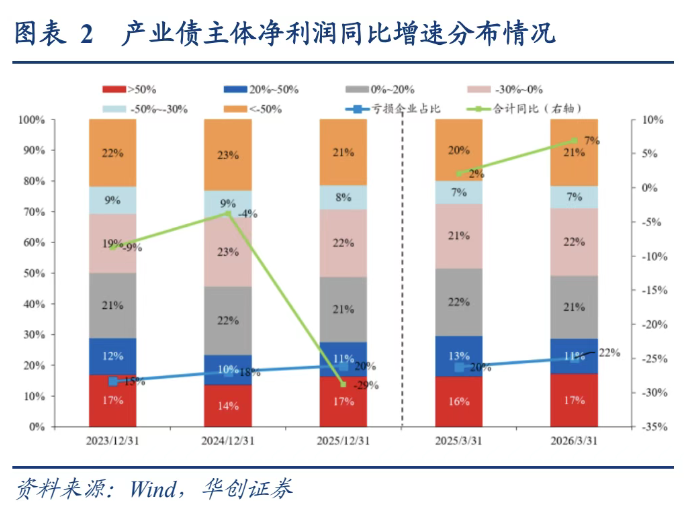
一句话核心：把 1679 家发债企业的财报摊开看，2025 年是利润大坑（-29%），2026 年一季度刚冒头回正（+7%），但亏损面还在扩大——复苏是"少数行业、头部公司"的复苏，不是雨露均沾。
背景与关键数据
- 产业债：企业（非金融、非城投平台）发行的债券。看这些发债主体的盈利，相当于给"实体经济中坚力量"做一次体检。
- 2025 年：营收 -2%，净利润 -29%，亏损企业占比从 18% 升到 20%。
- 2026 年一季度：营收 +1%、净利润 +7%（终于转正），但亏损企业占比又升 2 个百分点。
- 重灾区（亏损主体占比 >30%）：煤炭、基础化工、建筑材料、农林牧渔、房地产、传媒、纺织服饰、轻工制造——多是传统周期 + 地产链 + 低端制造。
图片解读
图表标题是"产业债主体净利润同比增速分布情况"。这是一张堆叠柱 + 折线的组合图：
- 彩色堆叠柱按利润增速分档（>50%、20%~50%、0%~20%、-30%~0%、-50%~-30%、<-50%），展示每个时点上企业利润增长的"分布结构"。
- 浅蓝折线 = 亏损企业占比：在 17%–22% 区间，2026/3/31 抬到约 22%，说明亏损面没收窄反而走阔。
- 绿色折线 = 合计净利润同比（右轴）：这是最直观的一条——它从 2024 年附近的正值，一路俯冲到 2025/12/31 的 约 -29%（大坑底），再急速反弹到 2026/3/31 的 约 +7%（V 型右半边）。
把两条线合起来读：总量利润在回升（绿线 V 型反弹），但亏损企业反而更多（蓝线上行）——这正是"K 型/结构性复苏"的典型形态：好的更好、差的更差。
为什么重要 / 对市场和经济的含义
这条数据是给"中国经济到底有没有企稳"做的微观证据。Jason 选它，想表达的可能是：别被"利润同比转正"的总量数字骗了。+7% 的回升很大程度是头部企业和个别行业（很可能是 AI/电子/出口链）撑起来的，广大中小、传统行业还在恶化。对投资的含义：
- 信用债要警惕尾部风险——亏损面扩大意味着低评级产业债违约概率上升；
- 股票上"哑铃化"会延续——资金继续抱团少数高景气龙头，传统周期估值难修复。
延伸知识：什么是"K 型复苏"
经济复苏常被用字母形容形状：V 型（快速反弹）、U 型（缓慢筑底）、L 型（长期低迷）。K 型则是说复苏出现分化——一部分（K 的上半笔）强劲向上，另一部分（K 的下半笔）继续向下。它常出现在技术变革或政策转向期：占住风口的企业（如今天的 AI 链）一飞冲天，被时代抛下的企业（传统制造、地产）越陷越深。看一个经济体健康与否，不能只看平均数，要看"中位数"和"分布"，否则会被少数巨头的光芒掩盖了大多数的困境。
帖 4 · 14:48 · #金融 —— "超级厄尔尼诺"逼近，上次损失 5.7 万亿美元
帖子原文
bloomberg：上一次超级厄尔尼诺造成全球 GDP 损失 5.7 万亿美元
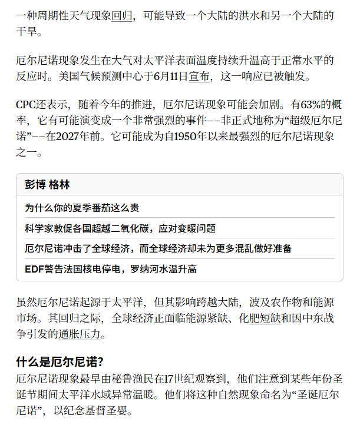
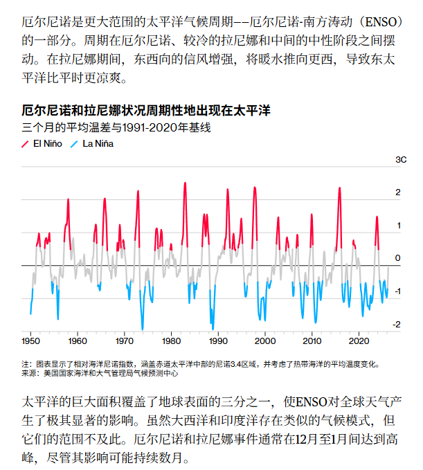
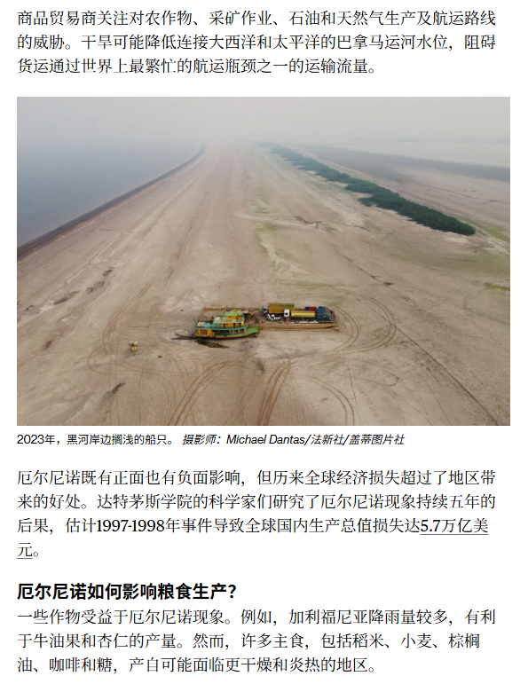
一句话核心：一个看似"天气新闻"的事件，其实是悬在大宗商品、能源、农产品和供应链头上的宏观风险——气候预测机构警告今年可能出现 1950 年以来最强的厄尔尼诺。
背景与关键数据
- 厄尔尼诺（El Niño）：太平洋赤道附近海水周期性异常变暖的现象。它会打乱全球大气环流，造成"一个大陆洪水、另一个大陆干旱"的极端天气。它和相反的冷相位拉尼娜（La Niña），以及中间的中性阶段，共同组成 **ENSO（厄尔尼诺-南方涛动）**周期。
- 美国气候预测中心（CPC）给出 63% 的概率，认为它可能演变成"非常强的"——即"超级厄尔尼诺"，最快 2027 年到来。
- 量化标准：尼诺 3.4 区海温连续 5 个重叠月超长期均值 0.5℃ 算厄尔尼诺，超 1.5℃ 算"强"，超 2℃ 算"非常强"。自 1950 年以来非常强的只有几次，最近一次是 2015–2016 年。
- 文中那句"5.7 万亿美元"的体量，正是用来提醒：这不是茶杯里的风波。
图片解读
帖子是一篇 Bloomberg 长文的连续截图，挑三张关键的看：
- 图 1（文章开头）：解释厄尔尼诺起源于秘鲁渔民对圣诞节附近海水变暖的观察（"圣婴"），并列出对全球经济的影响要点。
- 图 3（ENSO 指数图，1950–2020）：这是全文最硬的一张数据图。横轴是年份，纵轴是"三个月平均温差与 1991–2020 基线"的偏离（单位 ℃，范围 -2 到 +3）。红色尖峰 = 厄尔尼诺（暖），蓝色尖峰 = 拉尼娜（冷）。可以看到它像心电图一样上下摆动，其中红色最高的几次（如 1982–83、1997–98、2015–16）就是"超级厄尔尼诺"。
- 图 7（影响与对冲）：指出厄尔尼诺年大西洋飓风通常偏少（风切变强、抑制风暴），但太平洋台风往往增多——亚洲受灾风险上升；公用事业公司用 ENSO 预测来评估供暖/制冷需求，高温推升空调用电、给电网压力甚至引发停电，降雨减少则压制水电产出。
为什么重要 / 对市场和经济的含义
气候是宏观投资里常被忽略、但真金白银的变量：
- 农产品：干旱/洪水直接打击大豆、玉米、糖、咖啡、可可等产量 → 食品通胀；
- 能源：极端冷热推升取暖/制冷用电和天然气需求；水电减产又抬高火电需求 → 电价、煤价、气价；
- 供应链：亚洲台风增多可能扰乱港口、芯片、纺织等产业链。
Jason 把它归到 #金融#，是在提示：这是一个会从"天气"渗透到"通胀"和"商品价格"的长尾风险源，与今天另几条"通胀回来了"的帖子（PPI、ECB 加息）形成呼应。
延伸知识：天气如何变成"通胀"
经济学里有个概念叫供给冲击（supply shock）——不是需求变了，而是供给端突然出问题（如减产、断供），导致价格上涨。厄尔尼诺、战争、地震、疫情都是典型供给冲击。它和需求拉动的通胀不同：央行加息能压住需求型通胀，却很难对付供给型通胀（加息不能让天下雨、让油田复产）。所以这类"实物世界"的风险，往往是央行最头疼的——这也解释了为什么今天 ECB 的声明里专门提到"能源价格冲击的强度和持续时间"。
帖 5 · 14:44 · #金融 —— 欧洲央行"由降转升"，2023 年来首次加息
帖子原文
zerohedge：欧洲央行自 2023 年以来首次加息，欧洲央行的新经济预测上调了 2026 年和 2027 年的通胀率，"前景仍不明朗，通胀带来上行风险，经济增长面临下行风险。战争对中期通胀和增长的全面影响，将取决于能源价格冲击的强度和持续时间，以及其间接和第二轮影响的规模。"至少有六艘超级油轮预计下个月抵达欧洲，这些超级油轮共运载着来自阿联酋和阿曼的 1200 万桶原油，大部分货物将在西北欧卸载。
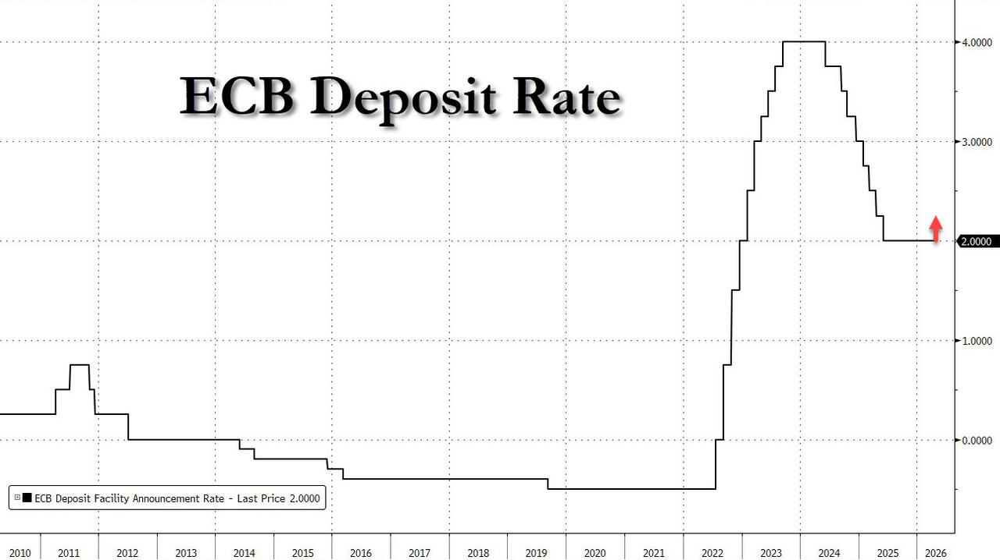
一句话核心：欧洲央行打破降息周期、掉头加息，而且上调了未来两年通胀预期——背后推手是战争带来的能源价格冲击。
背景与关键数据
- 欧洲央行（ECB）存款利率是欧元区的政策利率基准。这次它自 2023 年以来首次加息，方向从"降"转"升"，是个重要拐点。
- ECB 同时上调 2026、2027 年通胀预测，并明说"通胀有上行风险、增长有下行风险"——这是典型的滞胀式措辞（通胀高 + 增长弱，最难处理的组合）。
- 那句加粗的话点明根源：战争 → 能源价格冲击 → 通胀。所谓"第二轮影响"指能源涨价后，企业把成本转嫁到工资和其他商品上，引发更广泛的连锁涨价。
- 末尾"六艘超级油轮、1200 万桶原油运抵西北欧"是个供给侧细节：欧洲正抓紧从中东补库存，侧面印证能源紧张。
图片解读
这是一张 ECB 存款利率的长期走势图（2010–2026），阶梯状线条记录每次政策调整：
- 2010–2021 年长期处于极低甚至负利率（应对欧债危机和通缩）；
- 2022 年起为压制疫情后通胀急速加息，2023–2024 年见顶约 4%；
- 之后进入降息周期，一路降到约 1.75%；
- 图最右侧一个红色向上箭头指向 2.0000——也就是这次刚把利率从 1.75% 抬回 2.0%，标志降息周期被打断。
一句话：这张图把"先大幅加息、再降息、现在又被迫重新加息"的完整 U 型反转画得清清楚楚。
为什么重要 / 对市场和经济的含义
发达国家央行去年还在比谁先降息，现在欧洲却被迫回头加息，这是市场没充分预期的"鹰派转向"。含义：
- 欧元可能走强（加息利好本币）；
- 欧债收益率上行、债价承压；
- 全球"宽松交易"逻辑被打乱——如果连欧洲都因能源通胀重新加息，美联储的降息空间也会被重新定价（与帖 6 呼应）。
延伸知识：什么是"滞胀"与"第二轮效应"
滞胀（stagflation） = 经济停滞（stagnation）+ 通货膨胀（inflation），1970 年代石油危机时期最经典。它让央行陷入两难：加息能压通胀却伤增长，降息能保增长却纵容通胀。**第二轮效应（second-round effects）**指的是：第一轮是能源等直接涨价；第二轮是工人因生活成本上升要求加薪、企业把工资成本再转嫁到售价，形成"工资-物价螺旋"。央行最怕第二轮，因为一旦通胀预期"扎根"，就很难靠短期手段拔除——这正是 ECB 声明反复强调"持续时间"和"第二轮影响规模"的原因。
帖 6 · 14:38 · #金融 —— 沃什不必开口，市场替他收紧；PPI 创 2022 年来最快
帖子原文
bloomberg：沃什不用说话，市场在帮他行动。他很好的遵循了之前的"抱怨"——过往美联储在货币政策上表态太多了。美联储周四的一份报告显示，美国家庭净资产较上一季度增长了 1131 亿美元，达到 183 万亿美元，从债务/资产比看国穷民富。最新 PPI 数据较去年同期上涨了 6.5%，为自 2022 年 11 月以来的最高涨幅。人工智能作为美国经济增长的驱动力，也是股市创纪录财富的创造者，也成为该国最新通胀问题的一部分。
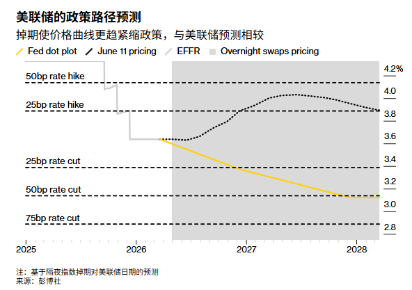
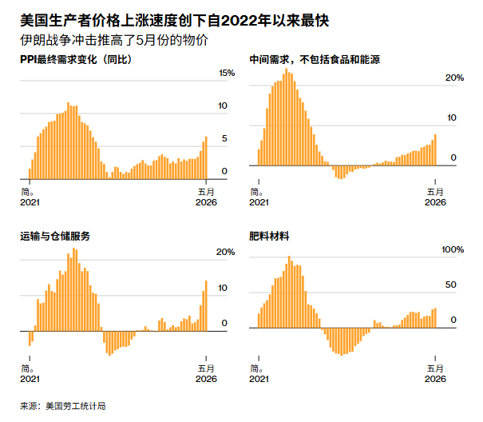
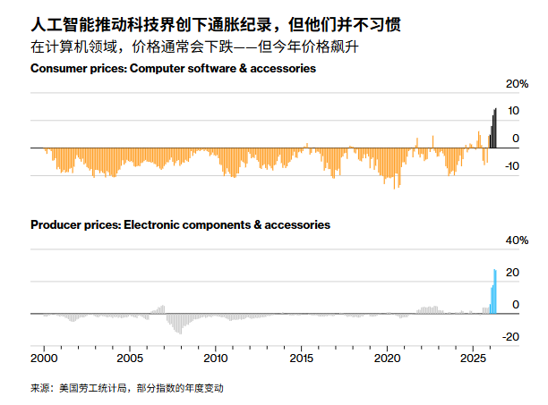
一句话核心：市场已经在替"潜在鹰派新主席"沃什提前收紧金融条件了；与此同时美国 PPI 涨到 6.5%（2022 年底以来最快），而 AI 既是增长引擎、也成了通胀的新来源。
背景与关键数据
- 沃什（Kevin Warsh）：前美联储理事，立场偏鹰（主张更紧的货币政策），被视为潜在的下任美联储主席人选。"市场在帮他行动"的意思是：市场已经按更紧的政策路径来定价了，相当于替他先把活儿干了。
- PPI（生产者物价指数）：衡量企业出厂端的价格，是 CPI（消费者物价）的"上游先行指标"。最新 PPI 同比 +6.5%，是 2022 年 11 月以来最高——上游成本压力很大。
- 美国家庭净资产升至 183 万亿美元（环比 +1131 亿）。Jason 那句"国穷民富"很精辟：政府负债累累，但居民部门资产负债表非常健康（资产远多于负债）。
- 一个关键叙事：AI 既推高增长和股市，也在推高通胀——这打破了"科技 = 通缩"的老印象。
图片解读
- 图 1（美联储的政策路径预测）：黄线 = 美联储自己的点阵图（dot plot，官员们的利率预期，往下走到约 3.0%）；黑色虚线 = "6 月 11 日市场定价"（先升到约 3.9% 再缓降到 3.8%）。关键：市场定价的路径明显高于美联储官员的预期，说明掉期市场认为美联储会比自己说的更"鹰"、降息更少。这就是"市场替沃什收紧"的图证。
- 图 2（美国 PPI 创 2022 年来最快，伊朗战争冲击推高 5 月物价）：四个小图——PPI 最终需求、中间需求（除食品能源）、运输与仓储服务、肥料材料——全部在 2026 年 5 月急速翘头向上。多个维度同时反弹，说明涨价是广谱的、不是个别项。
- 图 3（AI 推动科技界创下通胀纪录）：上图是消费端"电脑软件及配件"价格、下图是生产端"电子元器件及配件"价格。这两类东西历来是逐年降价（科技进步让电子产品越来越便宜），但今年却罕见地飙升（消费端 +10% 以上、生产端 +20% 以上的尖峰）。这就是"AI 抢芯片、抢算力、抢电力，把科技品价格从通缩推成通胀"的直接证据。
为什么重要 / 对市场和经济的含义
这帖把三件事拧成一股绳：通胀回来 + 市场自发收紧 + AI 是新通胀源。含义：
- 押注"美联储很快降息"的交易风险加大——市场自己都不信了；
- 科技股的逻辑变复杂：AI 需求强劲利好营收，但它带来的电子品涨价也是通胀的一部分，可能反过来推高利率、压制估值；
- "国穷民富"提醒：美国消费韧性（靠居民财富）会让通胀更黏，央行更难快速转松。
延伸知识：PPI 为什么是 CPI 的"先行指标"
商品的价格是沿着产业链传导的：原材料 → 出厂价（PPI）→ 零售价（CPI）。PPI 在上游，通常领先 CPI 几个月。所以 PPI 突然冲高，往往预示几个月后消费者也会感受到涨价。投资者盯 PPI，就是想抢在 CPI 公布前判断通胀方向。另一个值得记住的反常识点：科技产品的"长期通缩"是过去几十年压低整体通胀的隐形功臣（摩尔定律让算力越来越便宜）。如果 AI 把这个"通缩引擎"逆转成"通胀引擎"，那将是对全球低通胀格局的一次结构性挑战。
帖 7 · 14:29 · #美股 —— SpaceX 的"太空 AI 数据中心"与供应链瓶颈
帖子原文
bloomberg：SpaceX 的目标是"将意识之光延伸到星辰"，并计划每年将 100 吉瓦的太阳能人工智能数据中心送入轨道。这项工作每年需要数千次发射，然而中国主导着包括镓和太阳多晶硅在内的关键技术的大规模制造，这对于供应链是个严重的问题。
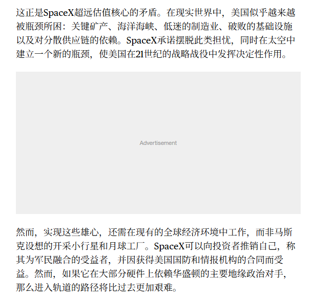
一句话核心：马斯克想把 AI 数据中心搬到太空（每年送 100 吉瓦上轨道），但实现这个宏图的关键材料——镓、多晶硅——恰恰被中国把着，形成战略软肋。
背景与关键数据
- **100 吉瓦（GW）**是个夸张的体量——作为参照，地面上一座大型核电站约 1 GW，100 GW 相当于上百座核电站的功率，全部部署在太空、每年需要数千次火箭发射。
- 卡点在材料：**镓（gallium）**用于高性能半导体和射频芯片；多晶硅（polysilicon）是太阳能电池板的核心原料。这两样的大规模制造由中国主导。
- 文章配图（截图）点出 SpaceX 估值的核心矛盾：美国越来越被"瓶颈"所困——关键矿产、海洋海峡、低迷的制造业、对分散供应链的依赖；而 SpaceX 一边想摆脱这些担忧，一边在硬件上又离不开主要地缘对手（中国）。
图片解读
这是一篇 Bloomberg 文章的截图（文字为主），核心论点："这正是 SpaceX 超远估值核心的矛盾"——它把自己包装成"军民融合受益者"，能拿美国国防和情报合同；但只要它在大部分硬件上依赖华盛顿的主要地缘对手，进入轨道的路就会比过去更艰难。
为什么重要 / 对市场和经济的含义
Jason 把它放在 #美股#，提示这是一个估值 vs 现实约束的故事：
- 关键矿产是地缘武器——中国对镓、锗等已实施出口管制，太阳能多晶硅产能更是全球主导。任何依赖这些材料的美国科技愿景（AI、太空、新能源）都有被"卡脖子"的风险；
- 对投资的启示：给 SpaceX、AI 基建这类"星辰大海"叙事估值时，要把供应链地缘风险折进去，而不是只看技术愿景。
延伸知识：什么是"关键矿产"与"卡脖子"
现代高科技高度依赖一小撮特殊元素：镓、锗、稀土、锂、钴等。它们用量不大，但不可替代，且开采/精炼高度集中在少数国家。谁控制了这些"工业维生素"，谁就握有产业链的咽喉。这就是为什么"关键矿产"成了大国博弈的新战场——它和石油在 20 世纪的地位类似，是 21 世纪的"战略资源"。理解这一点，就能看懂很多看似纯技术的故事（AI、电动车、光伏）背后都藏着一条地缘供应链的暗线。
帖 8 · 14:23 · #经济数据 —— 中国试水"医疗旅游"
帖子原文
bloomberg：中国正在推动其"医疗旅游"，使得外国患者来中国寻求更快的医疗服务。此举效仿新加坡和泰国，目前处于初期阶段。
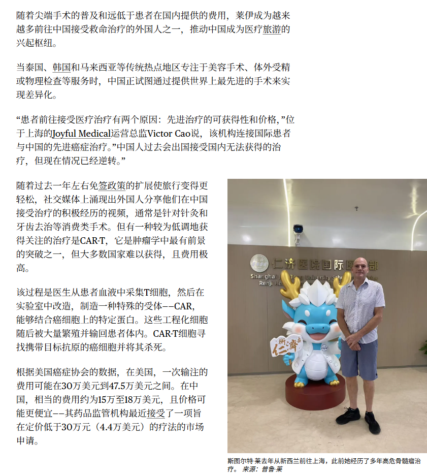
一句话核心：中国开始学习新加坡、泰国，发展"看病 + 旅游"产业，吸引外国患者来华就医——还在很早期。
背景与关键数据
- 医疗旅游（medical tourism）：患者跨国就医，通常图的是更快、更便宜或更高质量的医疗服务，顺便旅游。泰国（曼谷的国际医院）、新加坡、印度都是成熟玩家。
- 中国的优势可能在于：医疗资源体量大、部分专科和中医特色、价格相对欧美低、等待时间短。
- 文章配图是一家面向外籍的医疗机构（涉及"富艾必达 Amcare"等私立/高端医疗品牌）场景。
图片解读
截图是一篇报道，配一张人物照片（一人站在卡通吉祥物旁，像是医院/诊所环境），正文讲中国私立高端医疗机构面向外国患者提供更快捷服务的尝试，处于起步阶段。
为什么重要 / 对市场和经济的含义
放在 #经济数据# 下，这其实是一个服务业出口 / 消费升级的微观信号：
- 医疗旅游是赚外汇的服务贸易——患者来华消费医疗、酒店、餐饮、旅游，对地方经济和私立医疗集团是增量；
- 在出口（货物）承压、内需偏弱的背景下，中国在找新的"服务型增长点"，和发展入境游、首店经济是一个思路；
- 规模还小，更多是"政策方向 + 早期试点"，短期对经济数据影响有限，但值得作为结构转型的观察样本长期跟踪。
延伸知识：什么是"服务贸易"
国际贸易分两大块：货物贸易（卖实物，如手机、汽车）和服务贸易（卖服务，如旅游、运输、金融、教育、医疗）。一个经济体越发达，服务贸易占比通常越高。医疗旅游、留学、入境游都属于服务出口——外国人来你这儿花钱，等于你"出口"了服务、赚到了外汇。对中国而言，服务贸易长期是逆差（出国旅游、留学花得多），发展医疗旅游这类入境服务，有助于改善服务贸易平衡，也是消费结构升级的体现。
帖 9 · 14:18 · #经济数据 —— 中国光伏电池：产能过剩、持续亏损
帖子原文
日经：光伏电池曾被定位为中国的增长产业，但相关企业却深陷盈利困境。依靠补贴扩大出口的同时，行业产能过剩问题持续加剧。中国企业整体产能达到 1000 吉瓦，相当于全球年装机容量（500～700 吉瓦）的 1.5～2 倍。供过于求导致价格崩溃，调查公司 CEIC 的数据显示，光伏面板价格从 2021 年的峰值下跌约 6 成，作为原材料的多晶硅的价格则从 2022 年的峰值下跌约 85%。更艰难的是光伏电池的国内需求将在 2026 年首次转为减少。中国国家能源局的统计显示，1～4 月光伏面板新增装机量为 50.9 吉瓦，同比减少了约 50%。
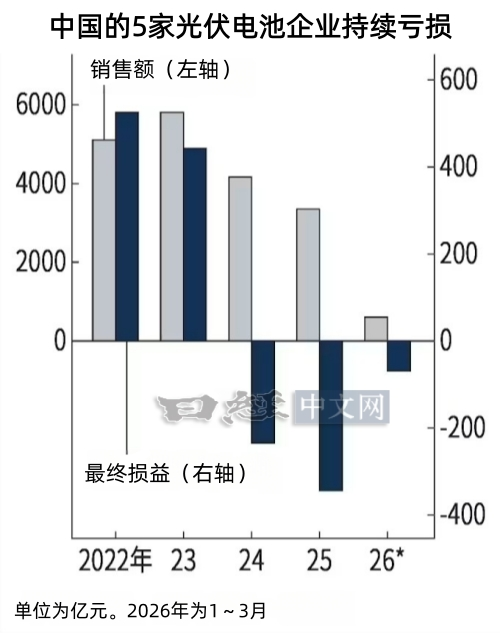
一句话核心：曾是"国之重器"的光伏行业，现在因为产能严重过剩（中国产能是全球需求的 1.5–2 倍）、价格崩盘、国内需求首次萎缩，龙头企业集体陷入巨亏。
背景与关键数据
- 中国光伏整体产能约 1000 GW，而全球一年装机需求才 500–700 GW——产能是需求的 1.5～2 倍，典型的"造得出、用不掉"。
- 价格崩盘：光伏面板较 2021 年峰值跌约 60%；上游多晶硅较 2022 年峰值跌约 85%。
- 雪上加霜：2026 年国内需求将首次转为减少；1–4 月新增装机 50.9 GW，同比腰斩（-50%）。
图片解读
日经中文网的图："中国的 5 家光伏电池企业持续亏损"。这是一张双轴柱状图：
- 灰色柱（左轴）= 销售额（亿元）：从 2022 年的约 5100、2023 年约 5800 的高点，逐年下滑到 2026 年（1–3 月）只剩一小截。营收在缩水。
- 深蓝柱（右轴）= 最终损益（亿元）：2022、2023 年还略有盈利（柱子在零轴上方），但 2024 年起坠入零轴下方，2025 年亏损最深（约 -350～-400 亿），2026 年初仍在亏。
- 两轴对照：销售在萎缩、亏损在扩大，行业从"增长产业"变成"失血产业"。
为什么重要 / 对市场和经济的含义
这是"内卷式产能过剩"的教科书案例，也和帖 3（产业债盈利分化、亏损行业含基础化工）相互印证：
- 通缩压力：光伏、多晶硅价格暴跌是中国 PPI 长期偏弱、工业通缩的缩影——和美国 PPI 冲高 6.5% 形成鲜明对比（中美通胀方向相反）；
- 政策走向：产能过剩到这种程度，往往会触发"反内卷"——行业整合、淘汰落后产能、限制盲目扩产。光伏可能迎来供给侧出清；
- 投资含义：上游多晶硅价格已跌 85%，意味着行业可能接近成本底，但"国内需求首次萎缩"又是新利空——短期难言反转，需等供给出清和需求回暖共振。
延伸知识：什么是"产能过剩"与"内卷"
产能过剩指一个行业的生产能力远超市场需求，结果就是大家拼命降价抢订单，谁都赚不到钱，甚至集体亏损。这在补贴驱动、一窝蜂上马的新兴行业里特别常见（光伏、电动车、动力电池都经历过）。"内卷"是它的通俗说法——不是把蛋糕做大，而是同质化的玩家在存量里恶性竞争、互相消耗。破解之道通常是"供给侧改革"：靠政策或市场出清掉一批落后产能，让活下来的企业恢复定价权和利润。中国 2016 年对煤炭、钢铁做过一轮供给侧改革，光伏现在面临的是类似剧本。
帖 10 · 14:05 · #金融 —— "TACO"如期而至：特朗普放风伊朗协议，股涨油跌
帖子原文
zerohedge：TACO 如期而至，特朗普表示协议近在眼前——股市上涨，国债利率下跌，油价下跌，美元下跌，黄金上涨
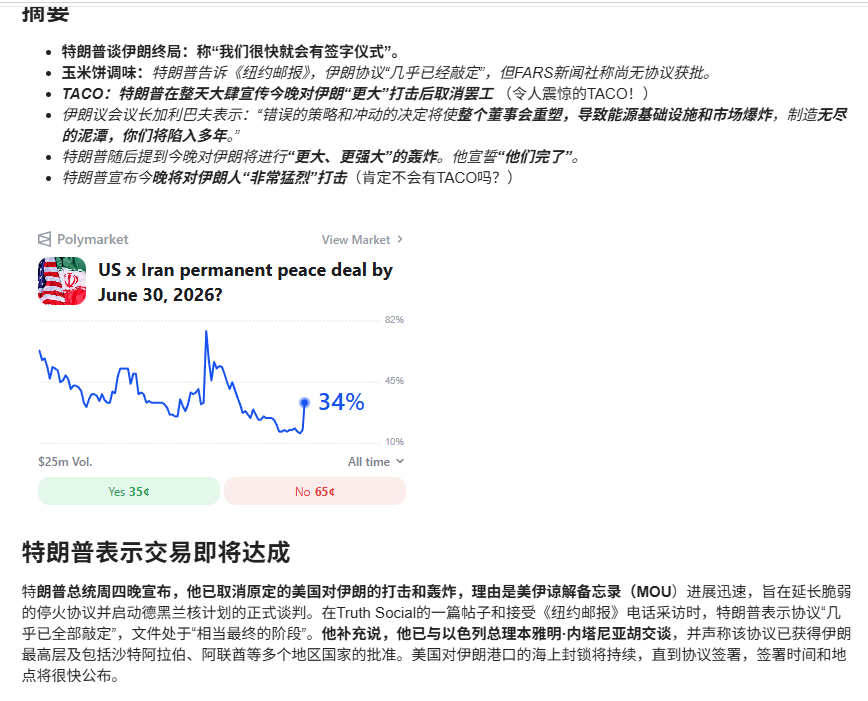
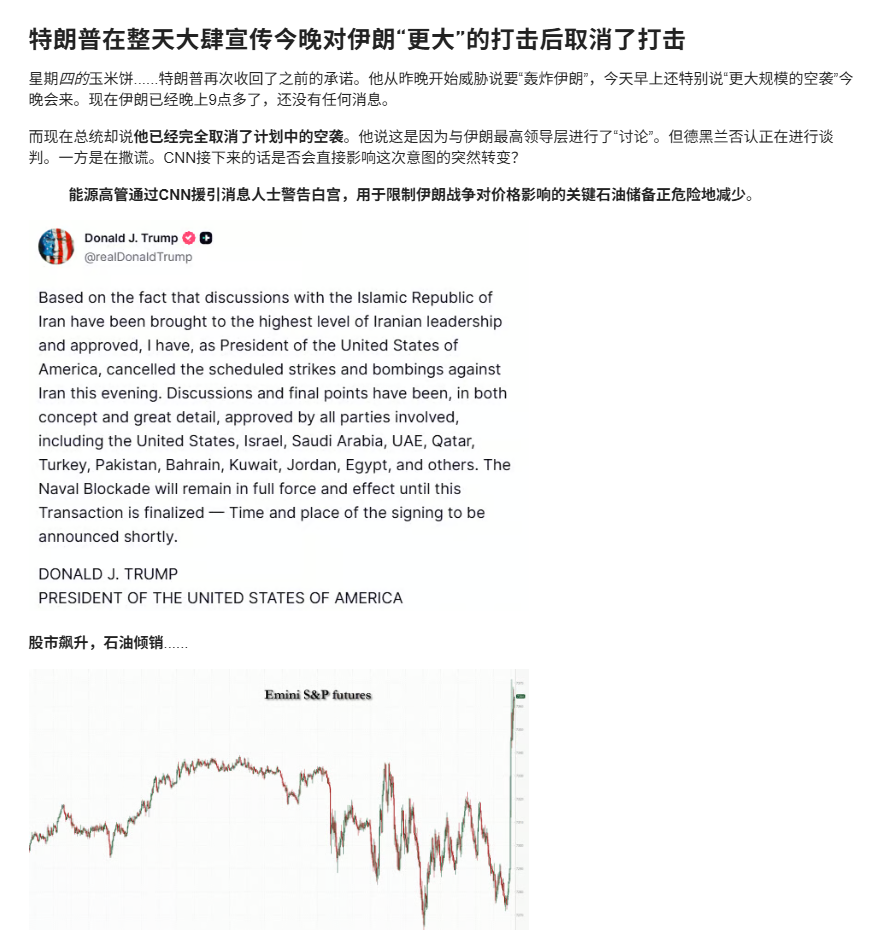
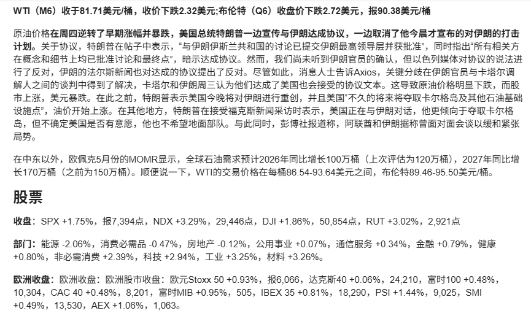
一句话核心：特朗普先放话要重击伊朗、再转身宣布"协议近在眼前"，市场吃下这套"先恐吓后握手"的剧本——风险资产大涨、避险的油和美元下跌、黄金上涨。
背景与关键数据
- TACO = "Trump Always Chickens Out"（特朗普总是临阵退缩）的缩写，是市场圈的一个梗：特朗普常先抛出强硬威胁（关税、军事打击），把市场吓一跳，然后又软化/和解，市场随即反弹。久而久之，交易员学会"别被吓住，等他怂"。
- 这次剧本：特朗普先扬言"今晚将对伊朗进行重创""夺取卡尔格岛及其他石油基础设施"，油价先涨；随后又在帖子里说"与伊朗的讨论已交伊朗最高领导层并获批准""所有相关方在概念和细节上均已批准"，暗示达成协议 → 油价大跌、股市大涨。
- Polymarket（预测市场）上"美国与伊朗 6 月 30 日前达成永久和平协议"的概率约 34%——市场半信半疑。
图片解读
这是 zerohedge 的当日收盘综述截图，挑三张：
- 图 1：列出特朗普的几条表态（"我们很快就会有签字仪式""非常接近打击"），下方是 Polymarket 那个 34% 的概率盘口。
- 图 4：特朗普 Truth Social 的英文原帖截图，配一张油价/市场的日内走势图，显示消息出来后价格剧烈波动。
- 图 6（市场总结，最硬的一张）：
- 原油：WTI（M6）收 81.71 美元/桶，跌 2.32；布伦特（Q6）收 90.38，跌 2.72——周四日内由涨转跌暴跌。
- 股票收盘：标普 SPX +1.75% 报 7,394；纳指 NDX +3.29% 报 29,446；道指 DJI +1.86% 报 50,854；罗素 2000 RUT +3.02% 报 2,921——全面大涨，科技和小盘领涨。
- 板块：科技 +2.94%、工业 +3.25%、材料 +3.26% 领涨；能源 -2.06% 唯一下跌（因油价跌）。
- 欧洲：Stoxx 50 +0.93% 报 6,066 等普涨。
把这些数字连起来，正好印证帖子标题那句"股涨、债利率跌、油跌、美元跌、金涨"的**典型 risk-on（风险偏好回升）**组合。
为什么重要 / 对市场和经济的含义
- 地缘缓和是当下最强的"看涨催化剂"：一旦中东战争降温，油价下行 → 通胀压力缓解 → 股市和债市同时受益。这条帖和帖 5（ECB 因战争加息）、帖 6（PPI 因伊朗战争冲高）正好是硬币的两面：战争推高通胀，停火则压低通胀；
- "TACO 交易"已成市场行为模式：交易员越来越倾向于"逢威胁做多、等和解兑现"，但这也埋着风险——万一哪次特朗普"不怂"真动手，习惯性抄底的人会被反噬；
- 能源板块逆势下跌，提示资产间的"地缘对冲"关系：紧张时买油气、缓和时卖油气买科技。
延伸知识：什么是"risk-on / risk-off"
市场情绪常被分成两种模式。Risk-on（风险偏好）：投资者乐观，钱往高风险高回报的资产跑——股票（尤其科技、小盘）涨、信用债涨、避险资产（黄金、美元、美债）相对走弱。Risk-off（避险）：投资者恐慌，钱涌向安全资产——美债、黄金、美元、日元涨，股票跌。判断当下是 on 还是 off，看几类资产的"联动方向"就行。今天这组"股涨油跌美元跌"基本是 risk-on，但有个细节耐人寻味：黄金也涨了——通常 risk-on 时金价会弱，这次金价仍涨，说明在地缘缓和的乐观情绪之外，市场对通胀（帖 5、6）和长期货币贬值的担忧并没消失。这种"股金齐涨"的组合，往往出现在"既要博反弹、又怕通胀"的纠结时刻。
今日全图索引
| 帖号 | 时间 | 主题 | 标签 | 图片文件名 |
|---|---|---|---|---|
| 1 | 15:27 | 房产税首次成地方第一大税种 | #TAX | post1_img1.jpg |
| 2 | 15:05 | Tether 持续买金，全球第五大买家 | #金融 | post2_img1.jpg, post2_img2.jpg |
| 3 | 14:54 | 产业债主体盈利"修复但脆弱" | #经济数据 | post3_img1.jpg |
| 4 | 14:48 | 超级厄尔尼诺风险（上次损失 5.7 万亿） | #金融 | post4_img1–img8.jpg（共 8 张） |
| 5 | 14:44 | 欧洲央行 2023 年来首次加息 | #金融 | post5_img1.jpg |
| 6 | 14:38 | 市场替沃什收紧；PPI 创 2022 年来最快；AI 推升科技品价格 | #金融 | post6_img1–img3.jpg（共 3 张） |
| 7 | 14:29 | SpaceX 太空 AI 数据中心与镓/多晶硅供应链瓶颈 | #美股 | post7_img1.jpg |
| 8 | 14:23 | 中国试水医疗旅游 | #经济数据 | post8_img1.jpg |
| 9 | 14:18 | 中国光伏电池产能过剩、持续亏损 | #经济数据 | post9_img1.jpg |
| 10 | 14:05 | TACO：特朗普放风伊朗协议，股涨油跌 | #金融 | post10_img1–img6.jpg（共 6 张） |
说明：报告正文为节省篇幅，每帖嵌入了最具代表性的 1–3 张图；当日全部 25 张原图均已保存在
daily_summaries/jason_images/2026-06-11/子目录下，可对照索引查阅。